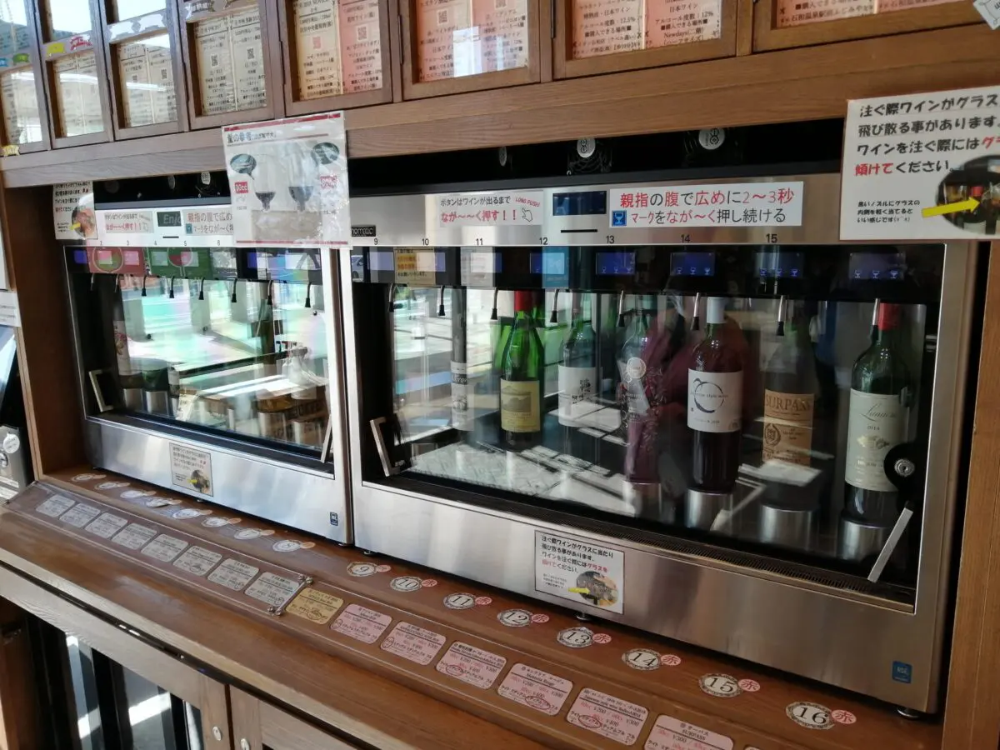
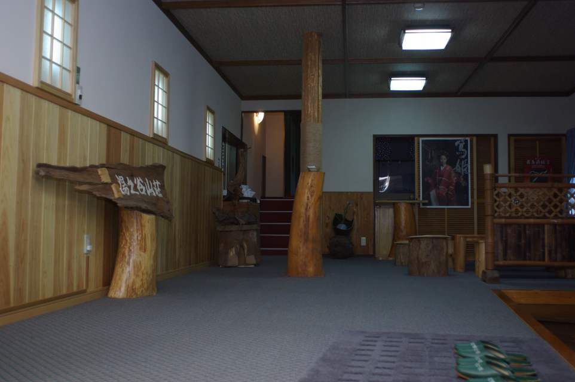

とりあえず10選。よりどりみどり、どれを選ぶ？
～山奥の1軒宿。千年の秘湯～
蔦温泉 (青森)
温泉名所が多い青森だが、蔦温泉ももれなくその中に入るだろう。
山奥にある一軒宿で、久安3年には既に現在の場所に湯治小屋があったという。
温泉はぷくぷく足元から湧く源泉湧き流し。
それ自体も珍しいが、雰囲気のある浴室が複数個ある。
食事は木のぬくもりがあたたかな食事処でいただく。
季節の会席は青森県産の食材を使用しており、見た目麗しい。
新青森駅まで新幹線、そのあと車で約90分。
四季折々の風景をのぞかせる蔦沼にもぜひアクセスしてもらいたい。
～「山と湖と温泉」の豊かな自然地～
水沢温泉郷 駒ヶ岳温泉 (秋田)
駒ヶ岳、田沢湖、そして水沢温泉郷。
素晴らしい体験をした後、温泉に入ることができるのは
えもいわれぬ程の感情をもたらすだろう。
駒ヶ岳は紅葉の時期に人気のスポット。
都内から夜行バスで向かい、そのまま登山する方も多いのだとか。
そして下山後、乳白色の駒ヶ岳温泉でほっこり。
人気の露天風呂は川沿いにあり、川のせせらぎを楽しむこともできる。
公共交通機関でも行けなくはないが、周囲の温泉を巡るなら車がおすすめ。
美しい秋田の自然を全身で楽しむ旅はいかが？
～「行くぜ、東北」のロケ地～
青根温泉 湯元 不忘閤 (宮城)
「行くぜ、〇〇」のアイキャッチに選ばれる場所はどこも美しい。
この不忘閣も、選ばれた名に恥じないくらい美しい温泉旅館だ。
伊達政宗をはじめとする仙台藩主に愛されていた温泉旅館らしい。
各温泉はすべて貸切。
どの浴槽も意匠を凝らしているため、早めにチェックインして予約しておきたい。
また不忘閣は人気な旅館ながら1人にもやさしいプランがある。
お値段も2万円以下とお手頃。
夜は点灯された殿舎の眺めも是非目に焼き付けてほしい。
一人旅初心者に、素敵な思い出を。
.jpg)
～食事がとにかく美味しい、ハイクラスな宿～
湯田川温泉 九兵衛旅館 (山形)
温泉宿はたいてい地物を扱った料理を出すが、九兵衛旅館はとにかく凝っている。
ドリンクはビールはもちろん、日本酒の豊富さは群を抜く。
個室でいただく料理は、白百合のムース、孟宗姫皮の土佐酢ジュレなど
とにかく珍しい調理がされて出てくる。
季節毎のコース料理はカニはもちろん、筍やブリなど飽きないラインナップ。
季節を変えて何度でも訪れたい人がいる理由も深く頷ける。
温泉は2種類。1つには金魚を眺めながら入浴が叶う。
アルカリ性で少し熱めの温泉がまた良い。
また周囲に共同温泉があり、宿泊者限定でキーを借りることができる。
姉妹館もあるが、こちらは1人では泊まれないので温泉を楽しむ。
「とにかく季節のおいしいものが食べたい。お金は多少高くてもいい」。
そんな時、この宿を思い出してほしい。
～渓谷が望める極上の露天風呂～
燕温泉 ホテル花文 (新潟)
燕温泉は、新潟県妙高市にある妙高山の麓にある小さな温泉街。
「黄金の湯」「河原の湯」という無料で楽しめる公衆浴場の他、
土産物屋などこじんまり落ち着いた雰囲気の場所である。
ホテル花文は、そんな燕温泉のバス停からほど近い場所に位置する。
宿からすぐの場所に足湯があるが、特に注目すべきは白く濁る硫黄泉。
時によっては青白く見えることもあるらしい。
大田切渓谷が望む露天風呂に浸かるのはなかなかの贅沢。
宿は少々古めかしいが、値段はリーズナブルで土日でも一人泊可能。
そばの時期には、新そばの十割そばが付くプランもあり。
「とにかく温泉重視。古さは気にならない」な方におすすめ。
～足下湧出の絶妙ぬる湯、温泉マニアがこぞって集まる～
下部温泉 古湯坊源泉館 (山梨)
「こんな辺鄙な場所に温泉があるのだろうか…？」と心配になるような場所、下部温泉。
ここは甲府から見延線に乗り換えて約40分、喧噪とはほど遠い。
だが、なんとびっくり。ここには足下湧出の極上ぬる湯が存在する。
混浴ではあるが、必ず湯あみ着着用のルールと女性専用時間帯あり。
温泉好きな人たちでここを通らないものはいないと言われているほど素晴らしい湯だ。
他にもぬる湯ではないが、男女別の内湯もあり。
部屋は特筆することもなく普通の畳部屋。
全体的に古いが宿は清潔感あり。
食事は上記のようなタイプと、湯治用のもの、
そして腹八分タイプの3種類。
「最近暑いし、ぬる湯でまったりしたいなぁ。できれば都内近郊で」と思う方。
是非ここの温泉は入っておきたい。

.jpg)
～1分間に1,415L！自家源泉が大量に注がれる～
石和温泉 旅館 深雪温泉 (山梨)
引き続き山梨の温泉旅館の紹介になるが、深雪温泉は本当にすごい。
新宿から特急で90分、石和温泉駅から徒歩で10分。
アクセス抜群で、なおかつ温泉も食事も非の打ちどころが見当たらない。
深雪温泉は完熟の湯と呼ばれており、特に柿の湯の露天風呂は広い。
温度の異なる2つの源泉が惜しみなく注がれ、なんとその量1分間に1,415L。
石和温泉でもっとも贅沢なお湯、と言われても納得できる。
食事は部屋食もしくは個室食。
丁寧に、そして繊細に盛り付けられた食事で大満足。
地酒3種飲み比べセットは、1種180mlも地酒が注がれている。
細かい網目のような鉄板で甲州牛を焼き、地酒と合わせると止まらなくなる。
また石和温泉駅にも魅力がたっぷり。
観光案内所ではワインサーバーが用意されており、
300円～好きな銘柄を楽しむことができる。
ここは行かない理由を考えるのが難しい。とにかく予約するのがいい、今すぐ。
～大事な人と一緒に訪れてほしい、自然豊かな宮島の地～
宮島潮湯温泉 錦水館 (広島)
これまで紹介したすべての宿は1泊2食付きで一人泊可能だが、
錦水荘は1人で夕飯付きのプランは確認できていない(朝食付き、素泊まりは可)。
そのため誰か大切な人との記念日などにご利用することをおすすめする。
とにかく「大人のための宿」と言っても過言ではない錦水荘。
料理はメインに「魚」「肉」「肉と魚」そして「魚と野菜」と4種類そろえている。
強くおすすめしたいのは「魚」メインのプラン。
瀬戸内の海鮮がおいしいのはもちろん、広島名物の牡蠣が並ぶ。
おまけに姿煮や刺身、なんでもござれ。
そしてラウンジやシーサイドテラスなど、まったり時間を過ごすのにも◎。
500円でナイトツアーも楽しめる。
お値段はハイクラスだが、その分サービスも温泉も食事も部屋も期待して良し。
一生に一度の贅沢として検討してみてはいかが？

～とにかく温泉がよい！～
霧島湯之谷山荘 (鹿児島)
これまで紹介した宿の中で霧島湯之谷山荘は特に古い。
もともと湯治宿として開始したため、ハイクラス宿のようなおもてなしは期待できない。
だが、それでも「一番好きな温泉は霧島湯之谷山荘」という人は多い。
その理由は内湯にある。
上記中心の画像を見てほしい。これが内湯だ。
配置自体も美しいが、3種類の浴槽はそれぞれ温度が異なる。
小さい湯舟はぬる湯、一番奥は熱め、そしてその温度が混ざりあった真ん中の湯舟がちょうどよい温度の温泉になる。
熱めのお湯とぬる湯の交互浴をするもよし、真ん中の湯でまったりするのも良し。
入浴の仕方は各々で見つけてほしい。
湯治宿であるが予想以上にしっかりとした食事が1泊2食付きで食べられる。
アクセスは鹿児島空港からバスでいくのが一番楽。
「宿は古くてもいいからとにかく温泉でだらだらしたい。宿の人に構わないでほしい」。
そう思った時には、思い切って遠出したらいかがだろうか？
～熊本豪雨災害から復興。登録有形文化財の宿で一息～
人吉温泉 人吉旅館 (熊本)
令和2年に熊本を襲った豪雨災害はご存じだろうか？
数多くの建物が被害にあったが、こちら人吉旅館もその1つである。
水害後はその被害の大きさに心が折れ、もう復興は無理だと諦めそうになることもあったという。
しかし、全国から様々な形の支援を受け、この度復興に至った。
文化財の復興は想像以上に困難を極めるのだが、その影さえ見当たらぬほど美しい館内。
浴槽は80cmの深さがあるものと、野性味あふれる岩風呂。
とろみがあり軽く色づいているその泉質は、浸かると肌がつるつるになる美肌の湯として名高い。
食事は地元、人吉・球磨のこだわりの食材を使用した本格会席料理。
土曜日の一人泊プランはないが、それ以外は1泊2食付きプランでも可能。
人の力を借りて復興に至った素晴らしい宿に、是非一度足を運んでほしい。